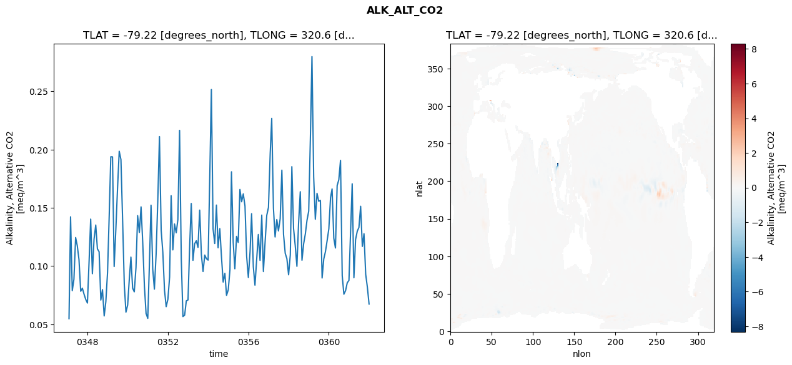
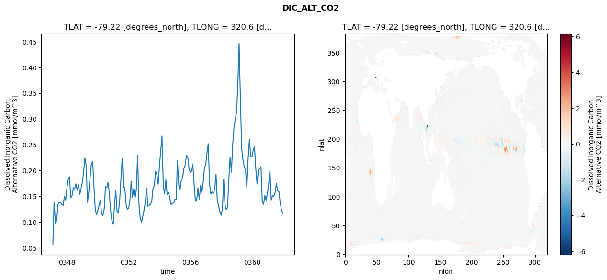
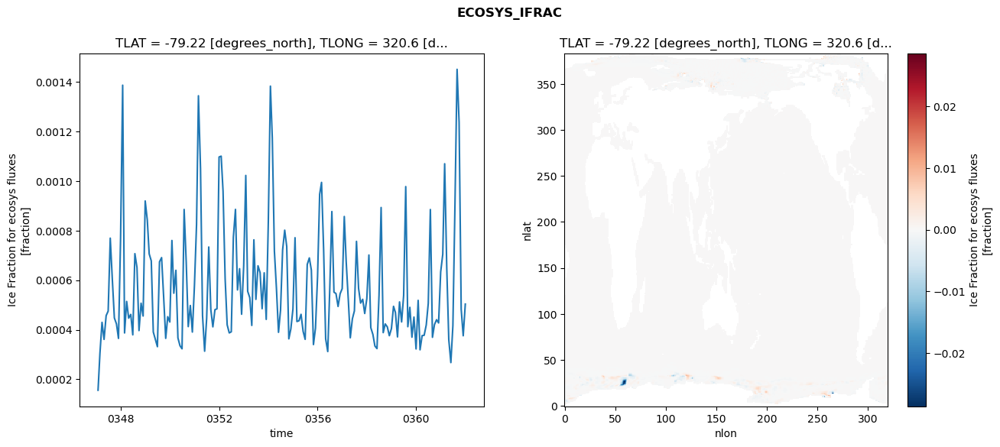
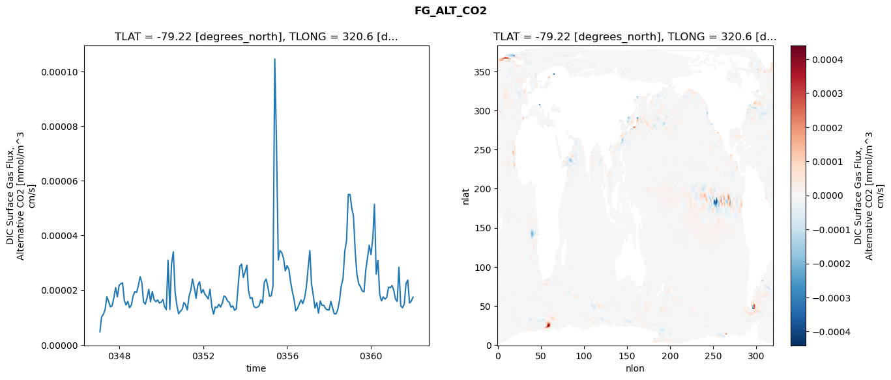

glb-dor_North_Atlantic_basin_014_1999-01-01_00056#
Simulation details#
Case: smyle.cdr-atlas-v0.glb-dor_North_Atlantic_basin_014_1999-01-01_00056.001
Basin: North_Atlantic_basin
Polygon: 14.0
Start date: 1999-01
Show code cell source Hide code cell source
import xarray as xr
import matplotlib.pyplot as plt
Show code cell source Hide code cell source
zarr_store = "/path/to/zarr/store"
# Parameters
zarr_store = "/global/cfs/projectdirs/m4746/Projects/Ocean-CDR-Atlas-v0/data/validation/smyle.cdr-atlas-v0.glb-dor_North_Atlantic_basin_014_1999-01-01_00056.001.validation.zarr"
Show code cell source Hide code cell source
%%time
ds_o = xr.open_zarr(zarr_store).compute()
ds_o
CPU times: user 695 ms, sys: 446 ms, total: 1.14 s
Wall time: 1.33 s
<xarray.Dataset> Size: 2MB
Dimensions: (nlat: 384, nlon: 320, time: 180)
Coordinates:
TLAT float64 8B -79.22
TLONG float64 8B 320.6
ULAT float64 8B -78.95
ULONG float64 8B 321.1
* time (time) object 1kB 0347-02-01 00:00:00 ... 0362-01-01 0...
z_t float32 4B 500.0
Dimensions without coordinates: nlat, nlon
Data variables:
ALK_ALT_CO2_diff (nlat, nlon) float32 492kB nan nan nan ... nan nan nan
ALK_ALT_CO2_rmse (time) float64 1kB 0.05485 0.1423 ... 0.08201 0.06739
DIC_ALT_CO2_diff (nlat, nlon) float32 492kB nan nan nan ... nan nan nan
DIC_ALT_CO2_rmse (time) float64 1kB 0.05662 0.1394 ... 0.1234 0.1171
ECOSYS_IFRAC_diff (nlat, nlon) float32 492kB nan nan nan ... nan nan nan
ECOSYS_IFRAC_rmse (time) float64 1kB 0.0001561 0.0003051 ... 0.0005036
FG_ALT_CO2_diff (nlat, nlon) float32 492kB nan nan nan ... nan nan nan
FG_ALT_CO2_rmse (time) float64 1kB 4.792e-06 1.016e-05 ... 1.742e-05xarray.Dataset
- nlat: 384
- nlon: 320
- time: 180
- TLAT()float64-79.22
- long_name :
- array of t-grid latitudes
- units :
- degrees_north
array(-79.22052261)
- TLONG()float64320.6
- long_name :
- array of t-grid longitudes
- units :
- degrees_east
array(320.56250892)
- ULAT()float64-78.95
- long_name :
- array of u-grid latitudes
- units :
- degrees_north
array(-78.95289509)
- ULONG()float64321.1
- long_name :
- array of u-grid longitudes
- units :
- degrees_east
array(321.12500894)
- time(time)object0347-02-01 00:00:00 ... 0362-01-...
- bounds :
- time_bound
- long_name :
- time
array([cftime.DatetimeNoLeap(347, 2, 1, 0, 0, 0, 0, has_year_zero=True), cftime.DatetimeNoLeap(347, 3, 1, 0, 0, 0, 0, has_year_zero=True), cftime.DatetimeNoLeap(347, 4, 1, 0, 0, 0, 0, has_year_zero=True), cftime.DatetimeNoLeap(347, 5, 1, 0, 0, 0, 0, has_year_zero=True), cftime.DatetimeNoLeap(347, 6, 1, 0, 0, 0, 0, has_year_zero=True), cftime.DatetimeNoLeap(347, 7, 1, 0, 0, 0, 0, has_year_zero=True), cftime.DatetimeNoLeap(347, 8, 1, 0, 0, 0, 0, has_year_zero=True), cftime.DatetimeNoLeap(347, 9, 1, 0, 0, 0, 0, has_year_zero=True), cftime.DatetimeNoLeap(347, 10, 1, 0, 0, 0, 0, has_year_zero=True), cftime.DatetimeNoLeap(347, 11, 1, 0, 0, 0, 0, has_year_zero=True), cftime.DatetimeNoLeap(347, 12, 1, 0, 0, 0, 0, has_year_zero=True), cftime.DatetimeNoLeap(348, 1, 1, 0, 0, 0, 0, has_year_zero=True), cftime.DatetimeNoLeap(348, 2, 1, 0, 0, 0, 0, has_year_zero=True), cftime.DatetimeNoLeap(348, 3, 1, 0, 0, 0, 0, has_year_zero=True), cftime.DatetimeNoLeap(348, 4, 1, 0, 0, 0, 0, has_year_zero=True), cftime.DatetimeNoLeap(348, 5, 1, 0, 0, 0, 0, has_year_zero=True), cftime.DatetimeNoLeap(348, 6, 1, 0, 0, 0, 0, has_year_zero=True), cftime.DatetimeNoLeap(348, 7, 1, 0, 0, 0, 0, has_year_zero=True), cftime.DatetimeNoLeap(348, 8, 1, 0, 0, 0, 0, has_year_zero=True), cftime.DatetimeNoLeap(348, 9, 1, 0, 0, 0, 0, has_year_zero=True), cftime.DatetimeNoLeap(348, 10, 1, 0, 0, 0, 0, has_year_zero=True), cftime.DatetimeNoLeap(348, 11, 1, 0, 0, 0, 0, has_year_zero=True), cftime.DatetimeNoLeap(348, 12, 1, 0, 0, 0, 0, has_year_zero=True), cftime.DatetimeNoLeap(349, 1, 1, 0, 0, 0, 0, has_year_zero=True), cftime.DatetimeNoLeap(349, 2, 1, 0, 0, 0, 0, has_year_zero=True), cftime.DatetimeNoLeap(349, 3, 1, 0, 0, 0, 0, has_year_zero=True), cftime.DatetimeNoLeap(349, 4, 1, 0, 0, 0, 0, has_year_zero=True), cftime.DatetimeNoLeap(349, 5, 1, 0, 0, 0, 0, has_year_zero=True), cftime.DatetimeNoLeap(349, 6, 1, 0, 0, 0, 0, has_year_zero=True), cftime.DatetimeNoLeap(349, 7, 1, 0, 0, 0, 0, has_year_zero=True), cftime.DatetimeNoLeap(349, 8, 1, 0, 0, 0, 0, has_year_zero=True), cftime.DatetimeNoLeap(349, 9, 1, 0, 0, 0, 0, has_year_zero=True), cftime.DatetimeNoLeap(349, 10, 1, 0, 0, 0, 0, has_year_zero=True), cftime.DatetimeNoLeap(349, 11, 1, 0, 0, 0, 0, has_year_zero=True), cftime.DatetimeNoLeap(349, 12, 1, 0, 0, 0, 0, has_year_zero=True), cftime.DatetimeNoLeap(350, 1, 1, 0, 0, 0, 0, has_year_zero=True), cftime.DatetimeNoLeap(350, 2, 1, 0, 0, 0, 0, has_year_zero=True), cftime.DatetimeNoLeap(350, 3, 1, 0, 0, 0, 0, has_year_zero=True), cftime.DatetimeNoLeap(350, 4, 1, 0, 0, 0, 0, has_year_zero=True), cftime.DatetimeNoLeap(350, 5, 1, 0, 0, 0, 0, has_year_zero=True), cftime.DatetimeNoLeap(350, 6, 1, 0, 0, 0, 0, has_year_zero=True), cftime.DatetimeNoLeap(350, 7, 1, 0, 0, 0, 0, has_year_zero=True), cftime.DatetimeNoLeap(350, 8, 1, 0, 0, 0, 0, has_year_zero=True), cftime.DatetimeNoLeap(350, 9, 1, 0, 0, 0, 0, has_year_zero=True), cftime.DatetimeNoLeap(350, 10, 1, 0, 0, 0, 0, has_year_zero=True), cftime.DatetimeNoLeap(350, 11, 1, 0, 0, 0, 0, has_year_zero=True), cftime.DatetimeNoLeap(350, 12, 1, 0, 0, 0, 0, has_year_zero=True), cftime.DatetimeNoLeap(351, 1, 1, 0, 0, 0, 0, has_year_zero=True), cftime.DatetimeNoLeap(351, 2, 1, 0, 0, 0, 0, has_year_zero=True), cftime.DatetimeNoLeap(351, 3, 1, 0, 0, 0, 0, has_year_zero=True), cftime.DatetimeNoLeap(351, 4, 1, 0, 0, 0, 0, has_year_zero=True), cftime.DatetimeNoLeap(351, 5, 1, 0, 0, 0, 0, has_year_zero=True), cftime.DatetimeNoLeap(351, 6, 1, 0, 0, 0, 0, has_year_zero=True), cftime.DatetimeNoLeap(351, 7, 1, 0, 0, 0, 0, has_year_zero=True), cftime.DatetimeNoLeap(351, 8, 1, 0, 0, 0, 0, has_year_zero=True), cftime.DatetimeNoLeap(351, 9, 1, 0, 0, 0, 0, has_year_zero=True), cftime.DatetimeNoLeap(351, 10, 1, 0, 0, 0, 0, has_year_zero=True), cftime.DatetimeNoLeap(351, 11, 1, 0, 0, 0, 0, has_year_zero=True), cftime.DatetimeNoLeap(351, 12, 1, 0, 0, 0, 0, has_year_zero=True), cftime.DatetimeNoLeap(352, 1, 1, 0, 0, 0, 0, has_year_zero=True), cftime.DatetimeNoLeap(352, 2, 1, 0, 0, 0, 0, has_year_zero=True), cftime.DatetimeNoLeap(352, 3, 1, 0, 0, 0, 0, has_year_zero=True), cftime.DatetimeNoLeap(352, 4, 1, 0, 0, 0, 0, has_year_zero=True), cftime.DatetimeNoLeap(352, 5, 1, 0, 0, 0, 0, has_year_zero=True), cftime.DatetimeNoLeap(352, 6, 1, 0, 0, 0, 0, has_year_zero=True), cftime.DatetimeNoLeap(352, 7, 1, 0, 0, 0, 0, has_year_zero=True), cftime.DatetimeNoLeap(352, 8, 1, 0, 0, 0, 0, has_year_zero=True), cftime.DatetimeNoLeap(352, 9, 1, 0, 0, 0, 0, has_year_zero=True), cftime.DatetimeNoLeap(352, 10, 1, 0, 0, 0, 0, has_year_zero=True), cftime.DatetimeNoLeap(352, 11, 1, 0, 0, 0, 0, has_year_zero=True), cftime.DatetimeNoLeap(352, 12, 1, 0, 0, 0, 0, has_year_zero=True), cftime.DatetimeNoLeap(353, 1, 1, 0, 0, 0, 0, has_year_zero=True), cftime.DatetimeNoLeap(353, 2, 1, 0, 0, 0, 0, has_year_zero=True), cftime.DatetimeNoLeap(353, 3, 1, 0, 0, 0, 0, has_year_zero=True), cftime.DatetimeNoLeap(353, 4, 1, 0, 0, 0, 0, has_year_zero=True), cftime.DatetimeNoLeap(353, 5, 1, 0, 0, 0, 0, has_year_zero=True), cftime.DatetimeNoLeap(353, 6, 1, 0, 0, 0, 0, has_year_zero=True), cftime.DatetimeNoLeap(353, 7, 1, 0, 0, 0, 0, has_year_zero=True), cftime.DatetimeNoLeap(353, 8, 1, 0, 0, 0, 0, has_year_zero=True), cftime.DatetimeNoLeap(353, 9, 1, 0, 0, 0, 0, has_year_zero=True), cftime.DatetimeNoLeap(353, 10, 1, 0, 0, 0, 0, has_year_zero=True), cftime.DatetimeNoLeap(353, 11, 1, 0, 0, 0, 0, has_year_zero=True), cftime.DatetimeNoLeap(353, 12, 1, 0, 0, 0, 0, has_year_zero=True), cftime.DatetimeNoLeap(354, 1, 1, 0, 0, 0, 0, has_year_zero=True), cftime.DatetimeNoLeap(354, 2, 1, 0, 0, 0, 0, has_year_zero=True), cftime.DatetimeNoLeap(354, 3, 1, 0, 0, 0, 0, has_year_zero=True), cftime.DatetimeNoLeap(354, 4, 1, 0, 0, 0, 0, has_year_zero=True), cftime.DatetimeNoLeap(354, 5, 1, 0, 0, 0, 0, has_year_zero=True), cftime.DatetimeNoLeap(354, 6, 1, 0, 0, 0, 0, has_year_zero=True), cftime.DatetimeNoLeap(354, 7, 1, 0, 0, 0, 0, has_year_zero=True), cftime.DatetimeNoLeap(354, 8, 1, 0, 0, 0, 0, has_year_zero=True), cftime.DatetimeNoLeap(354, 9, 1, 0, 0, 0, 0, has_year_zero=True), cftime.DatetimeNoLeap(354, 10, 1, 0, 0, 0, 0, has_year_zero=True), cftime.DatetimeNoLeap(354, 11, 1, 0, 0, 0, 0, has_year_zero=True), cftime.DatetimeNoLeap(354, 12, 1, 0, 0, 0, 0, has_year_zero=True), cftime.DatetimeNoLeap(355, 1, 1, 0, 0, 0, 0, has_year_zero=True), cftime.DatetimeNoLeap(355, 2, 1, 0, 0, 0, 0, has_year_zero=True), cftime.DatetimeNoLeap(355, 3, 1, 0, 0, 0, 0, has_year_zero=True), cftime.DatetimeNoLeap(355, 4, 1, 0, 0, 0, 0, has_year_zero=True), cftime.DatetimeNoLeap(355, 5, 1, 0, 0, 0, 0, has_year_zero=True), cftime.DatetimeNoLeap(355, 6, 1, 0, 0, 0, 0, has_year_zero=True), cftime.DatetimeNoLeap(355, 7, 1, 0, 0, 0, 0, has_year_zero=True), cftime.DatetimeNoLeap(355, 8, 1, 0, 0, 0, 0, has_year_zero=True), cftime.DatetimeNoLeap(355, 9, 1, 0, 0, 0, 0, has_year_zero=True), cftime.DatetimeNoLeap(355, 10, 1, 0, 0, 0, 0, has_year_zero=True), cftime.DatetimeNoLeap(355, 11, 1, 0, 0, 0, 0, has_year_zero=True), cftime.DatetimeNoLeap(355, 12, 1, 0, 0, 0, 0, has_year_zero=True), cftime.DatetimeNoLeap(356, 1, 1, 0, 0, 0, 0, has_year_zero=True), cftime.DatetimeNoLeap(356, 2, 1, 0, 0, 0, 0, has_year_zero=True), cftime.DatetimeNoLeap(356, 3, 1, 0, 0, 0, 0, has_year_zero=True), cftime.DatetimeNoLeap(356, 4, 1, 0, 0, 0, 0, has_year_zero=True), cftime.DatetimeNoLeap(356, 5, 1, 0, 0, 0, 0, has_year_zero=True), cftime.DatetimeNoLeap(356, 6, 1, 0, 0, 0, 0, has_year_zero=True), cftime.DatetimeNoLeap(356, 7, 1, 0, 0, 0, 0, has_year_zero=True), cftime.DatetimeNoLeap(356, 8, 1, 0, 0, 0, 0, has_year_zero=True), cftime.DatetimeNoLeap(356, 9, 1, 0, 0, 0, 0, has_year_zero=True), cftime.DatetimeNoLeap(356, 10, 1, 0, 0, 0, 0, has_year_zero=True), cftime.DatetimeNoLeap(356, 11, 1, 0, 0, 0, 0, has_year_zero=True), cftime.DatetimeNoLeap(356, 12, 1, 0, 0, 0, 0, has_year_zero=True), cftime.DatetimeNoLeap(357, 1, 1, 0, 0, 0, 0, has_year_zero=True), cftime.DatetimeNoLeap(357, 2, 1, 0, 0, 0, 0, has_year_zero=True), cftime.DatetimeNoLeap(357, 3, 1, 0, 0, 0, 0, has_year_zero=True), cftime.DatetimeNoLeap(357, 4, 1, 0, 0, 0, 0, has_year_zero=True), cftime.DatetimeNoLeap(357, 5, 1, 0, 0, 0, 0, has_year_zero=True), cftime.DatetimeNoLeap(357, 6, 1, 0, 0, 0, 0, has_year_zero=True), cftime.DatetimeNoLeap(357, 7, 1, 0, 0, 0, 0, has_year_zero=True), cftime.DatetimeNoLeap(357, 8, 1, 0, 0, 0, 0, has_year_zero=True), cftime.DatetimeNoLeap(357, 9, 1, 0, 0, 0, 0, has_year_zero=True), cftime.DatetimeNoLeap(357, 10, 1, 0, 0, 0, 0, has_year_zero=True), cftime.DatetimeNoLeap(357, 11, 1, 0, 0, 0, 0, has_year_zero=True), cftime.DatetimeNoLeap(357, 12, 1, 0, 0, 0, 0, has_year_zero=True), cftime.DatetimeNoLeap(358, 1, 1, 0, 0, 0, 0, has_year_zero=True), cftime.DatetimeNoLeap(358, 2, 1, 0, 0, 0, 0, has_year_zero=True), cftime.DatetimeNoLeap(358, 3, 1, 0, 0, 0, 0, has_year_zero=True), cftime.DatetimeNoLeap(358, 4, 1, 0, 0, 0, 0, has_year_zero=True), cftime.DatetimeNoLeap(358, 5, 1, 0, 0, 0, 0, has_year_zero=True), cftime.DatetimeNoLeap(358, 6, 1, 0, 0, 0, 0, has_year_zero=True), cftime.DatetimeNoLeap(358, 7, 1, 0, 0, 0, 0, has_year_zero=True), cftime.DatetimeNoLeap(358, 8, 1, 0, 0, 0, 0, has_year_zero=True), cftime.DatetimeNoLeap(358, 9, 1, 0, 0, 0, 0, has_year_zero=True), cftime.DatetimeNoLeap(358, 10, 1, 0, 0, 0, 0, has_year_zero=True), cftime.DatetimeNoLeap(358, 11, 1, 0, 0, 0, 0, has_year_zero=True), cftime.DatetimeNoLeap(358, 12, 1, 0, 0, 0, 0, has_year_zero=True), cftime.DatetimeNoLeap(359, 1, 1, 0, 0, 0, 0, has_year_zero=True), cftime.DatetimeNoLeap(359, 2, 1, 0, 0, 0, 0, has_year_zero=True), cftime.DatetimeNoLeap(359, 3, 1, 0, 0, 0, 0, has_year_zero=True), cftime.DatetimeNoLeap(359, 4, 1, 0, 0, 0, 0, has_year_zero=True), cftime.DatetimeNoLeap(359, 5, 1, 0, 0, 0, 0, has_year_zero=True), cftime.DatetimeNoLeap(359, 6, 1, 0, 0, 0, 0, has_year_zero=True), cftime.DatetimeNoLeap(359, 7, 1, 0, 0, 0, 0, has_year_zero=True), cftime.DatetimeNoLeap(359, 8, 1, 0, 0, 0, 0, has_year_zero=True), cftime.DatetimeNoLeap(359, 9, 1, 0, 0, 0, 0, has_year_zero=True), cftime.DatetimeNoLeap(359, 10, 1, 0, 0, 0, 0, has_year_zero=True), cftime.DatetimeNoLeap(359, 11, 1, 0, 0, 0, 0, has_year_zero=True), cftime.DatetimeNoLeap(359, 12, 1, 0, 0, 0, 0, has_year_zero=True), cftime.DatetimeNoLeap(360, 1, 1, 0, 0, 0, 0, has_year_zero=True), cftime.DatetimeNoLeap(360, 2, 1, 0, 0, 0, 0, has_year_zero=True), cftime.DatetimeNoLeap(360, 3, 1, 0, 0, 0, 0, has_year_zero=True), cftime.DatetimeNoLeap(360, 4, 1, 0, 0, 0, 0, has_year_zero=True), cftime.DatetimeNoLeap(360, 5, 1, 0, 0, 0, 0, has_year_zero=True), cftime.DatetimeNoLeap(360, 6, 1, 0, 0, 0, 0, has_year_zero=True), cftime.DatetimeNoLeap(360, 7, 1, 0, 0, 0, 0, has_year_zero=True), cftime.DatetimeNoLeap(360, 8, 1, 0, 0, 0, 0, has_year_zero=True), cftime.DatetimeNoLeap(360, 9, 1, 0, 0, 0, 0, has_year_zero=True), cftime.DatetimeNoLeap(360, 10, 1, 0, 0, 0, 0, has_year_zero=True), cftime.DatetimeNoLeap(360, 11, 1, 0, 0, 0, 0, has_year_zero=True), cftime.DatetimeNoLeap(360, 12, 1, 0, 0, 0, 0, has_year_zero=True), cftime.DatetimeNoLeap(361, 1, 1, 0, 0, 0, 0, has_year_zero=True), cftime.DatetimeNoLeap(361, 2, 1, 0, 0, 0, 0, has_year_zero=True), cftime.DatetimeNoLeap(361, 3, 1, 0, 0, 0, 0, has_year_zero=True), cftime.DatetimeNoLeap(361, 4, 1, 0, 0, 0, 0, has_year_zero=True), cftime.DatetimeNoLeap(361, 5, 1, 0, 0, 0, 0, has_year_zero=True), cftime.DatetimeNoLeap(361, 6, 1, 0, 0, 0, 0, has_year_zero=True), cftime.DatetimeNoLeap(361, 7, 1, 0, 0, 0, 0, has_year_zero=True), cftime.DatetimeNoLeap(361, 8, 1, 0, 0, 0, 0, has_year_zero=True), cftime.DatetimeNoLeap(361, 9, 1, 0, 0, 0, 0, has_year_zero=True), cftime.DatetimeNoLeap(361, 10, 1, 0, 0, 0, 0, has_year_zero=True), cftime.DatetimeNoLeap(361, 11, 1, 0, 0, 0, 0, has_year_zero=True), cftime.DatetimeNoLeap(361, 12, 1, 0, 0, 0, 0, has_year_zero=True), cftime.DatetimeNoLeap(362, 1, 1, 0, 0, 0, 0, has_year_zero=True)], dtype=object) - z_t()float32500.0
- long_name :
- depth from surface to midpoint of layer
- positive :
- down
- units :
- centimeters
- valid_max :
- 537500.0
- valid_min :
- 500.0
array(500., dtype=float32)
- ALK_ALT_CO2_diff(nlat, nlon)float32nan nan nan nan ... nan nan nan nan
- cell_methods :
- time: mean
- grid_loc :
- 3111
- long_name :
- Alkalinity, Alternative CO2
- units :
- meq/m^3
array([[ nan, nan, nan, ..., nan, nan, nan], [ nan, nan, nan, ..., nan, nan, nan], [-0.02050781, -0.01293945, -0.00976562, ..., nan, nan, nan], ..., [ nan, nan, nan, ..., nan, nan, nan], [ nan, nan, nan, ..., nan, nan, nan], [ nan, nan, nan, ..., nan, nan, nan]], dtype=float32) - ALK_ALT_CO2_rmse(time)float640.05485 0.1423 ... 0.08201 0.06739
- cell_methods :
- time: mean
- grid_loc :
- 3111
- long_name :
- Alkalinity, Alternative CO2
- units :
- meq/m^3
array([0.05485443, 0.14229107, 0.07890724, 0.08867541, 0.12451375, 0.11742658, 0.10549491, 0.0783529 , 0.08104543, 0.07579292, 0.07142837, 0.06825572, 0.1050658 , 0.14032341, 0.0934578 , 0.12310556, 0.13523527, 0.11481719, 0.11229749, 0.07081494, 0.07976523, 0.05718194, 0.06932882, 0.09459907, 0.14476128, 0.19387332, 0.19378287, 0.09962215, 0.13188163, 0.16656979, 0.19859262, 0.19147869, 0.14021048, 0.0839164 , 0.06047517, 0.06657005, 0.08967036, 0.10769678, 0.08099655, 0.07789517, 0.09872695, 0.14328983, 0.1288554 , 0.15081491, 0.12066138, 0.08275285, 0.05929781, 0.05510425, 0.10402539, 0.1522726 , 0.0973702 , 0.08021721, 0.1100612 , 0.15517448, 0.21118348, 0.13072352, 0.11190895, 0.07905394, 0.06515295, 0.07150329, 0.09061489, 0.16039262, 0.11390751, 0.13612004, 0.12857286, 0.13983052, 0.21652779, 0.10592533, 0.05664094, 0.05789068, 0.07013421, 0.07092563, 0.11823385, 0.1537362 , 0.10496545, 0.11917644, 0.12172751, 0.11605778, 0.1480394 , 0.10954795, 0.09535736, 0.10942914, 0.1063453 , 0.1051313 , 0.17965075, 0.25156585, 0.13180335, 0.11941995, 0.15236562, 0.11568794, 0.13212324, 0.10734041, 0.08627475, 0.09372013, 0.07486312, 0.07952385, 0.0967553 , 0.18095022, 0.12047992, 0.09769617, 0.12552908, 0.12028638, 0.16577774, 0.1552074 , 0.16201444, 0.15152757, 0.10834103, 0.09015127, 0.11247992, 0.14498471, 0.09939628, 0.08361468, 0.10572755, 0.12714775, 0.1048991 , 0.14379274, 0.0953129 , 0.12083823, 0.14357322, 0.15042225, 0.19639486, 0.22682903, 0.14973326, 0.12498581, 0.13994834, 0.13019403, 0.14057946, 0.18236514, 0.12724956, 0.11093559, 0.1063549 , 0.0925197 , 0.10962306, 0.18536433, 0.13230761, 0.11779762, 0.0997828 , 0.1366171 , 0.16386019, 0.10504368, 0.1190901 , 0.12767708, 0.13930233, 0.14717517, 0.21172707, 0.2798627 , 0.17665422, 0.1402096 , 0.16248275, 0.15568999, 0.15634573, 0.08976641, 0.10605432, 0.11249381, 0.12178209, 0.13196391, 0.15877987, 0.16620232, 0.12399146, 0.1155286 , 0.16908543, 0.17411593, 0.19076231, 0.09179176, 0.07583977, 0.07891128, 0.08562835, 0.08769937, 0.13218864, 0.17064231, 0.08995944, 0.12269586, 0.12994348, 0.13317783, 0.151354 , 0.11691341, 0.12776847, 0.09289166, 0.08200799, 0.06739316]) - DIC_ALT_CO2_diff(nlat, nlon)float32nan nan nan nan ... nan nan nan nan
- cell_methods :
- time: mean
- grid_loc :
- 3111
- long_name :
- Dissolved Inorganic Carbon, Alternative CO2
- units :
- mmol/m^3
array([[ nan, nan, nan, ..., nan, nan, nan], [ nan, nan, nan, ..., nan, nan, nan], [-0.03295898, -0.02978516, -0.01757812, ..., nan, nan, nan], ..., [ nan, nan, nan, ..., nan, nan, nan], [ nan, nan, nan, ..., nan, nan, nan], [ nan, nan, nan, ..., nan, nan, nan]], dtype=float32) - DIC_ALT_CO2_rmse(time)float640.05662 0.1394 ... 0.1234 0.1171
- cell_methods :
- time: mean
- grid_loc :
- 3111
- long_name :
- Dissolved Inorganic Carbon, Alternative CO2
- units :
- mmol/m^3
array([0.05662432, 0.1394097 , 0.09810861, 0.10262487, 0.13431676, 0.13815327, 0.13773859, 0.13386448, 0.13226793, 0.14971315, 0.14259663, 0.16759104, 0.18356911, 0.18789668, 0.14686329, 0.15137892, 0.16662313, 0.16433826, 0.17419152, 0.16141453, 0.17229199, 0.15382775, 0.16558575, 0.17746634, 0.19885338, 0.2241813 , 0.20951754, 0.13832033, 0.1586396 , 0.18584687, 0.21249541, 0.21715921, 0.16859007, 0.12497874, 0.11428044, 0.12264858, 0.13332147, 0.14212699, 0.11617345, 0.11277334, 0.1251818 , 0.16883533, 0.16651393, 0.17699732, 0.1545689 , 0.12088161, 0.10255148, 0.09563445, 0.1332474 , 0.162377 , 0.12059594, 0.11749277, 0.13981728, 0.18251774, 0.22362378, 0.16715073, 0.16675637, 0.13461224, 0.12478164, 0.12706011, 0.14324801, 0.17916303, 0.14798212, 0.1644179 , 0.14653309, 0.16259712, 0.22898665, 0.13587074, 0.10851811, 0.09946633, 0.11026118, 0.12385549, 0.13931657, 0.16610066, 0.13080429, 0.13269868, 0.13455306, 0.13992587, 0.16559371, 0.17024954, 0.19877338, 0.19120674, 0.17340851, 0.21055454, 0.23948787, 0.26684935, 0.17008114, 0.15467322, 0.18191361, 0.15344484, 0.15697508, 0.14672605, 0.13385284, 0.13600677, 0.13727293, 0.14371971, 0.14335748, 0.21896207, 0.17195459, 0.16151685, 0.18135231, 0.1851047 , 0.20411428, 0.21036841, 0.22929568, 0.22675799, 0.20399336, 0.19596514, 0.19875653, 0.21256169, 0.17238733, 0.14117107, 0.14252936, 0.16658127, 0.14372838, 0.17088287, 0.15697843, 0.17698976, 0.20486207, 0.21197587, 0.23489578, 0.25183408, 0.1745305 , 0.15420214, 0.15859571, 0.1559852 , 0.16323638, 0.19294544, 0.14207846, 0.13203896, 0.12017024, 0.11335851, 0.12698909, 0.18369328, 0.1345948 , 0.12416027, 0.12825655, 0.18174806, 0.22601312, 0.19675611, 0.25055612, 0.28372644, 0.30084845, 0.31153461, 0.37126242, 0.44640995, 0.34046899, 0.24255766, 0.22074456, 0.2077443 , 0.19981415, 0.16661858, 0.22292177, 0.26079933, 0.22786568, 0.22741986, 0.2399398 , 0.24617579, 0.20249451, 0.17391296, 0.20188643, 0.20364048, 0.20739061, 0.13941125, 0.13444229, 0.15164231, 0.14234801, 0.15524896, 0.17478245, 0.2007019 , 0.14276044, 0.15114676, 0.14990713, 0.1572632 , 0.17529479, 0.16022486, 0.15863485, 0.13589167, 0.1234277 , 0.11705296]) - ECOSYS_IFRAC_diff(nlat, nlon)float32nan nan nan nan ... nan nan nan nan
- cell_methods :
- time: mean
- grid_loc :
- 2110
- long_name :
- Ice Fraction for ecosys fluxes
- units :
- fraction
array([[ nan, nan, nan, ..., nan, nan, nan], [ nan, nan, nan, ..., nan, nan, nan], [ 4.0531158e-04, -7.1585178e-05, -4.5180321e-05, ..., nan, nan, nan], ..., [ nan, nan, nan, ..., nan, nan, nan], [ nan, nan, nan, ..., nan, nan, nan], [ nan, nan, nan, ..., nan, nan, nan]], dtype=float32) - ECOSYS_IFRAC_rmse(time)float640.0001561 0.0003051 ... 0.0005036
- cell_methods :
- time: mean
- grid_loc :
- 2110
- long_name :
- Ice Fraction for ecosys fluxes
- units :
- fraction
array([0.00015608, 0.00030505, 0.00042982, 0.00036119, 0.00045695, 0.00047517, 0.00076935, 0.00060118, 0.0004476 , 0.00042362, 0.00036515, 0.00076969, 0.00138613, 0.00038712, 0.00051416, 0.00044672, 0.00046191, 0.00037956, 0.0007068 , 0.00065134, 0.00039671, 0.00050689, 0.00045537, 0.00091932, 0.00084269, 0.00070605, 0.00067773, 0.00039081, 0.00036022, 0.00033176, 0.00067404, 0.00069098, 0.00053491, 0.00036533, 0.00045268, 0.00043115, 0.00075999, 0.00054733, 0.00063972, 0.00036708, 0.00033531, 0.00032319, 0.00088511, 0.00067215, 0.00041269, 0.00049775, 0.00039068, 0.00057887, 0.00082417, 0.00134348, 0.0010493 , 0.00045672, 0.00031347, 0.00044603, 0.00073368, 0.00048019, 0.00041175, 0.00048093, 0.00048436, 0.00109663, 0.00109989, 0.00095867, 0.00060511, 0.0004199 , 0.0003872 , 0.00039173, 0.00077349, 0.00088532, 0.00056062, 0.00064608, 0.00046254, 0.00065788, 0.00102223, 0.00055502, 0.00052952, 0.00041745, 0.00076274, 0.00052258, 0.000658 , 0.00063037, 0.00048493, 0.00062956, 0.00044183, 0.00083518, 0.00138232, 0.0011722 , 0.00071737, 0.00056895, 0.00038964, 0.00047877, 0.00072195, 0.00080152, 0.0007352 , 0.00036342, 0.00040345, 0.00048351, 0.00077109, 0.0004333 , 0.00043623, 0.00046229, 0.00039318, 0.00036141, 0.00066331, 0.00068972, 0.00064049, 0.00034028, 0.00040634, 0.00061504, 0.00094624, 0.00099418, 0.0007223 , 0.00036321, 0.00031213, 0.00056575, 0.00087669, 0.00055163, 0.00054599, 0.00049401, 0.00054506, 0.00056572, 0.00085667, 0.00067611, 0.00052386, 0.00036764, 0.00044402, 0.00047597, 0.0007564 , 0.00056621, 0.00050746, 0.00052281, 0.0004656 , 0.00052513, 0.00070128, 0.00040851, 0.00038117, 0.00033444, 0.00032401, 0.00053931, 0.00089295, 0.00038841, 0.00042344, 0.00041153, 0.00037607, 0.00040479, 0.00049454, 0.00046986, 0.0003711 , 0.00051223, 0.00043155, 0.00053852, 0.00097723, 0.00041232, 0.00049031, 0.00036996, 0.00045108, 0.00032268, 0.00051844, 0.00031914, 0.00037638, 0.00037762, 0.0004192 , 0.00050644, 0.00088478, 0.00036955, 0.00042085, 0.0004405 , 0.00042746, 0.00063342, 0.00070469, 0.00106934, 0.00064994, 0.00036016, 0.00026762, 0.00041638, 0.00090798, 0.00145012, 0.00123668, 0.000483 , 0.00037581, 0.0005036 ]) - FG_ALT_CO2_diff(nlat, nlon)float32nan nan nan nan ... nan nan nan nan
- cell_methods :
- time: mean
- grid_loc :
- 2110
- long_name :
- DIC Surface Gas Flux, Alternative CO2
- units :
- mmol/m^3 cm/s
array([[ nan, nan, nan, ..., nan, nan, nan], [ nan, nan, nan, ..., nan, nan, nan], [-1.2760779e-07, 1.0967551e-07, 6.6423354e-08, ..., nan, nan, nan], ..., [ nan, nan, nan, ..., nan, nan, nan], [ nan, nan, nan, ..., nan, nan, nan], [ nan, nan, nan, ..., nan, nan, nan]], dtype=float32) - FG_ALT_CO2_rmse(time)float644.792e-06 1.016e-05 ... 1.742e-05
- cell_methods :
- time: mean
- grid_loc :
- 2110
- long_name :
- DIC Surface Gas Flux, Alternative CO2
- units :
- mmol/m^3 cm/s
array([4.79212040e-06, 1.01582591e-05, 1.11816390e-05, 1.27583430e-05, 1.75597220e-05, 1.59285500e-05, 1.38883758e-05, 1.42837641e-05, 1.72469761e-05, 2.09249613e-05, 1.75545032e-05, 2.18167609e-05, 2.23405893e-05, 2.26760495e-05, 1.62353809e-05, 1.46085977e-05, 1.58876776e-05, 1.35890902e-05, 1.45337534e-05, 1.78748276e-05, 1.94507926e-05, 1.91762550e-05, 2.16084852e-05, 2.49090804e-05, 2.26205763e-05, 1.57113618e-05, 1.48843464e-05, 1.72107868e-05, 2.02855531e-05, 1.57446483e-05, 1.95171185e-05, 1.65163034e-05, 1.57566406e-05, 1.64099784e-05, 1.52868877e-05, 1.55899684e-05, 1.66262519e-05, 1.40193752e-05, 1.28695333e-05, 3.10051078e-05, 1.29307198e-05, 2.95820230e-05, 3.40067038e-05, 1.92433621e-05, 1.46201180e-05, 1.13734628e-05, 1.22663017e-05, 1.29902334e-05, 1.54442278e-05, 1.47449015e-05, 1.27514095e-05, 1.76690197e-05, 2.00237955e-05, 2.40506275e-05, 2.08309786e-05, 1.70363928e-05, 2.18092217e-05, 2.30709434e-05, 1.89553710e-05, 2.02243548e-05, 1.85158871e-05, 1.77566428e-05, 1.67907403e-05, 2.03136364e-05, 1.40360993e-05, 1.12405891e-05, 1.38775911e-05, 1.36138057e-05, 1.48057119e-05, 1.38247896e-05, 1.52640648e-05, 1.78898238e-05, 1.73847087e-05, 1.60296281e-05, 1.55753322e-05, 1.37600779e-05, 1.42422631e-05, 1.26443832e-05, 1.31400469e-05, 2.11378208e-05, ... 1.04526249e-04, 7.35980825e-05, 3.10344131e-05, 3.44983255e-05, 3.36731364e-05, 3.15792588e-05, 2.70376207e-05, 2.89673239e-05, 2.76530234e-05, 2.33229459e-05, 1.96102811e-05, 1.67801402e-05, 1.24505465e-05, 1.32747936e-05, 1.49835881e-05, 1.64013387e-05, 1.50866231e-05, 1.71395911e-05, 2.08703770e-05, 2.79081040e-05, 3.44973998e-05, 2.24704345e-05, 1.80521571e-05, 1.34671039e-05, 1.54627367e-05, 1.16177832e-05, 1.60142511e-05, 1.44361967e-05, 1.45006397e-05, 1.32698931e-05, 1.28185269e-05, 1.27520410e-05, 1.58833939e-05, 1.37073367e-05, 1.13447789e-05, 1.12983297e-05, 1.28345723e-05, 1.62205995e-05, 2.15170173e-05, 2.42459647e-05, 3.41266737e-05, 3.81608671e-05, 5.49942447e-05, 5.49538157e-05, 4.98252879e-05, 4.71599318e-05, 3.40302698e-05, 2.56633417e-05, 2.23089177e-05, 2.12551791e-05, 1.96699669e-05, 1.93886281e-05, 2.73050737e-05, 3.19291291e-05, 3.64592253e-05, 3.30144506e-05, 3.91632965e-05, 5.13831221e-05, 2.58412897e-05, 3.09363585e-05, 1.83367885e-05, 1.60502995e-05, 1.75068377e-05, 1.67367412e-05, 1.73678538e-05, 2.10727501e-05, 2.09056139e-05, 2.16586467e-05, 1.99382495e-05, 1.67688853e-05, 1.58767105e-05, 2.83762317e-05, 1.43542952e-05, 1.35445656e-05, 1.48575573e-05, 2.23892664e-05, 2.37154865e-05, 1.52954844e-05, 1.60265285e-05, 1.74162733e-05])
- timePandasIndex
PandasIndex(CFTimeIndex([0347-02-01 00:00:00, 0347-03-01 00:00:00, 0347-04-01 00:00:00, 0347-05-01 00:00:00, 0347-06-01 00:00:00, 0347-07-01 00:00:00, 0347-08-01 00:00:00, 0347-09-01 00:00:00, 0347-10-01 00:00:00, 0347-11-01 00:00:00, ... 0361-04-01 00:00:00, 0361-05-01 00:00:00, 0361-06-01 00:00:00, 0361-07-01 00:00:00, 0361-08-01 00:00:00, 0361-09-01 00:00:00, 0361-10-01 00:00:00, 0361-11-01 00:00:00, 0361-12-01 00:00:00, 0362-01-01 00:00:00], dtype='object', length=180, calendar='noleap', freq='MS'))
Show code cell source Hide code cell source
variables = [v[:-5] for v in ds_o.variables if "_rmse" in v]
Show code cell source Hide code cell source
plt.rcParams.update({'figure.max_open_warning': 0})
for v in variables:
fig, axs = plt.subplots(1, 2, figsize=(15, 6))
ds_o[f"{v}_rmse"].plot(ax=axs[0])
ds_o[f"{v}_diff"].plot(ax=axs[1])
plt.suptitle(v, fontweight="bold")



